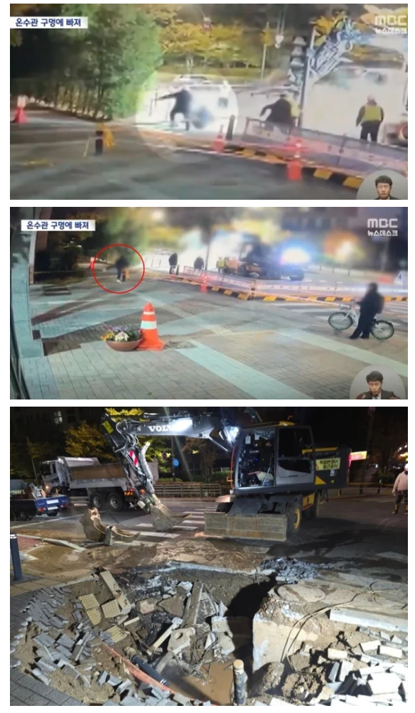

"안전선 넘더니 끓는 물에 빠져 전신화상"…온수관 사고 CCTV에 엇갈린 반응 [이슈픽] : 네이트 뉴스

지난 6일 오후 8시 18분쯤 서울 강서구 마곡동의 한 아파트 인근 도로에 매설된 열 수송관이 파열됐다.
이 사고로 도로 곳곳에서 뜨거운 수증기가 솟아올랐고, 지반이 내려앉으면서 신호등 1개가 쓰러져 파손됐다.
인근 아파트 등 8965세대의 난방과 온수 공급도 중단됐다.
문제는 사고 발생 약 4시간 40분 뒤인 7일 오전 1시쯤 발생했다.
현장을 지나던 40대 남성 A씨가 온수관 파열로 지반이 내려앉아 생긴 구멍에 빠진 것이다.
A씨는 섭씨 100도가 넘는 뜨거운 물에 노출돼 전신의 60%에 2·3도 화상을 입었다.
화상 전문 병원으로 옮겨져 중환자실에서 치료받고 있지만 위중한 상태인 것으로 전해졌다.
YTN, MBC 등이 공개한 사고 당시 폐쇄회로(CC)TV 영상에는 A씨가 현장 주변에 설치된 노란색 통제선을 넘어 도로 쪽으로 접근하는 모습이 담겼다.
영상 속 A씨는 아파트 단지 입구 인근을 지나던 중 통제선을 넘어 현장 작업자들 가까이 다가간다.
작업자들이 복구 작업에 집중하던 사이 A씨는 도로를 건너려는 듯 발걸음을 옮겼고,
이내 지반이 꺼지면서 시야에서 갑자기 사라졌다.
이를 목격한 작업자들은 황급히 달려와 구멍에 빠진 A씨를 밖으로 끌어냈다.
당시 현장에는 성인 허리 높이 정도의 노란색 통제선이 설치돼 있었지만,
일반인의 접근을 물리적으로 차단할 만한 별도의 안전펜스는 없었던 것으로 파악됐다.
현장에 별도의 통제 인력이 배치됐는지도 논란이 되고 있다.
현재 사고 현장에는 성인 키 높이의 안전펜스가 설치된 상태다.
CCTV 영상이 공개되자 온라인에서는 A씨의 행동을 두고 비판적인 반응도 나왔다.
일부 누리꾼들은 수증기가 피어오르고 복구 작업이 진행되는 위험한 현장에 통제선까지 넘어 접근한 것은 이해하기 어렵다는 반응을 보였다.
반면 시민의 부주의만을 문제 삼아서는 안 된다는 의견도 있다.
온수관 파열로 도로가 무너지고 섭씨 100도가 넘는 물이 유출되는 상황이라면 일반인이 위험 구역에 접근하지 못하도록 확실한 안전 조치가 이뤄졌어야 한다는 것이다.
특히 당시에는 노란색 통제선 외에 물리적인 차단 시설이 없었던 것으로 알려지면서,
사고 현장 관리 책임을 따져봐야 한다는 지적도 나온다.
깝깝한 일이지만 저런 모지리도 보호하려 노력하는게 국가의 책임이라고 생각.. 효율적으로 막을 수 있는 방법을 강구하는게 생산적인 토론일듯